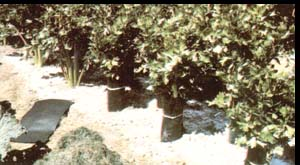

Be sure to include this crunchy palate-pleaser in your garden this year, because-
despite its reputation as a difficult-to-grow crop-you'll likely discover that with the
right care ...
While many gardeners boast of their zucchini yields or brag about the size of their prize tomatoes, it's rare that a green-thumber will even mention another staple of the vegetable plate: celery. Most people, it seems, are so intimidated by its reputation as a "fussy" crop that they prefer to harvest their celery from the supermarket. And, all too often, the enterprising folks who do attempt to cultivate these crisp stalks find that their labors result in a limp, discolored, and not quite right -tasting product.
In fact, my first try at celery culture was, to be honest, pretty disappointing ... but I've since discovered that this succulent salad plant is downright easy to grow as long as it's properly fed and watered. Moreover, because celery is such a nutritious food (it's rich in phosphorus, potassium, magnesium, and calcium ... and a good source of roughage), it's a valuable addition to your garden plot.
Around my home (in British Columbia), the preparations for a quality celery crop begin in late February, when I start my plants indoors. Otis S. Twilley Seed Company, Inc. (Dept. TMEN, P.O. Box 65, Trevose, Pennsylvania 19047) markets a variety of seed called Utah 52-70, which is well suited to the growing conditions in my area and highly resistant to disease. The stalks of this plant have a pleasing, nutty flavor, too. Whatever variety you choose, though, be sure to obtain fresh seed each spring, as older seed is often unreliable.
Using a shallow flowerpot filled with a porous mixture of equal amounts of vermiculite and potting soil, I sow the seeds sparsely (spacing them at least an inch apart), gently press them into the soil, and cover them with a 1/8-inch layer of vermiculite. Next, I add water to the pot's "dish" reservoir - allowing the moisture to soak into the soil from below - and cover the container with plastic wrap. Then I set the miniature greenhouse in a spot that'll remain at approximately 70°F.
Celery is slow to germinate it takes about three weeks for the shoots to begin peeking through the soil. At that signal, I remove the plastic and set the planter on a sunny windowsill where the seedlings will ,be well ventilated and can enjoy an even temperature of 60°F or thereabouts. I've found that a combination of good drainage, plenty of moisture, and cool temperatures will insure a healthy crop ... however, it is important to keep the delicate young sprouts from "catching cold", as they'll go to seed if left exposed to temperatures below 50°F.
When the plants are about a month old and close to 3 inches tall, they're ready for their first move ... to a small flat in which they're spaced on 3-inch centers. Once the celery plants start to shoot up in earnest, they're transferred again, this time to a cold frame where they'll remain until the nights are no colder than 55°F. In the meantime, I prepare the garden for the seedlings.
As celery is an incurable "moistureholic", I choose a site that has a ready supply of water close at hand and where the earth has a spongelike texture. Commercial growers plant their crops in "muck" soil, such as is found in old bogs, that contains a generous amount of decomposed material. The magic word for celery success you see, is water-holding humus . . . so I select a part of my garden that's , richly endowed with old manure, leaf mold, and peat moss.
Furthermore - in addition to having an unquenchable thirst - celery is a heavy feeder, requiring ample amounts of nitrogen, phosphorus, and potassium, as well as certain key minor nutrients. Therefore, after I've picked out a plot with water-retaining soil, my next priority is preparing a proper diet for the seedlings. To provide nourishment for my young plants, I dig compost, manure, dried blood, bonemeal, and phosphate rock dust into the top 4 inches of soil. (If your soil has a heavy texture, you might want to work to a depth of as much as 14 inches, so that the plants will be able to put out taproots more easily.)
Then, when the dark, friable earth invites planting and the weather is warm enough (usually around June 1 in these parts), I set out the celery seedlings. I generally allow 14 inches between the plants, but this distance could be reduced to 6 to 10 inches if space is at a premium in your garden (or if you're planting intensively in raised beds). Next, I water the celery thoroughly and apply a liquid fertilizer (such as fish emulsion or manure tea) to get the seedlings off to a good start.
Once the plants are in place, my main concern is protecting the crop against the garden predators that are partial to celery ... namely, slugs and celery worms. To prevent these voracious pests from lunching on (and thereby disfiguring) the stalks, I sprinkle a layer of fresh wood ashes around the base of each plant, forming a circular barrier about the size of a dinner plate. This technique not only discourages slugs and other trespassers, but also adds potash and helps to "sweeten" the soil. When hot weather arrives, I mulch the plants with straw and spread yet another thin blanket of ashes over the water-conserving cover. And that's all the care the slender stalks receive (except for periodic watering and an occasional dose of manure tea) until mid-August ... when I begin to think about blanching.
This procedure, which involves keeping light from the stalks of the plant, makes the celery tender and white. The vegetable can, of course, be enjoyed green ... but I prefer the paler stalks, so I bleach them.
There are several different ways to go about blanching celery, but some are more trouble than they're worth. I find that shading the stalks with wooden supports is something of a chore, for example. And although the "hilling" method of growing the plants in a trench and then banking soil around the stalks is easily accomplished, the celery I've blanched by this technique has invariably been chewed by slugs, resulting in an unappetizing harvest. In contrast, my present manner of blanching makes the stalks both attractive and tasty.
I call my method "ordaining". I simply wrap a "clerical collar" of tar paper around the celery stalk, covering the vegetable from the ground to the foliage, and making certain the paper overlaps enough to allow for the plant's growth. (A stout rubber band holds each collar in place.) That done, I sit back and wait for the harvest to begin.
In my area, the Utah 52-70 variety matures in mid-September. At the beginning of the celery harvest, I "defrock" one plant - exposing the clean white interior - and chomp into a stalk right there in the garden ... and that first crisp, nutty-flavored bite convinces me, once again, that homegrown celery is well worth waiting for.
EDITOR'S NOTE: You'll find more information on celery (and dozens of other vegetables!) in THE MOTHER EARTH NEWS(restricted) A-TO-Z Home Gardener's Handbook, available at your newsstand, or-for $3.95 plus 95 cents shipping and handling-from Mother's Bookshelf(restricted), 105 Stoney Mountain Road, Hendersonville, North Carolina 28791.
|
 |
|
|